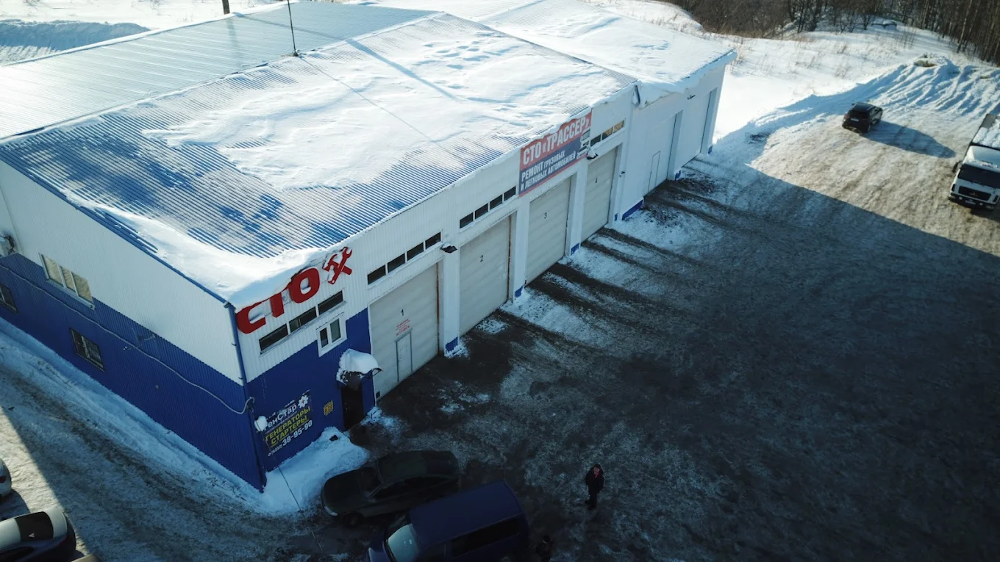
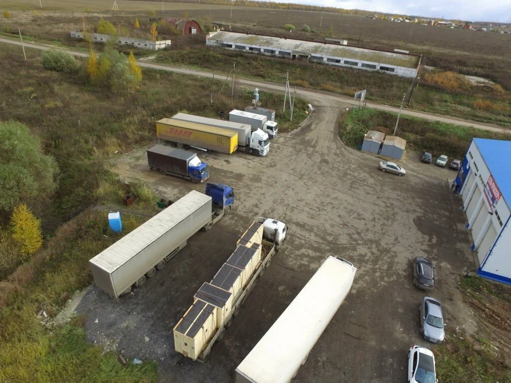
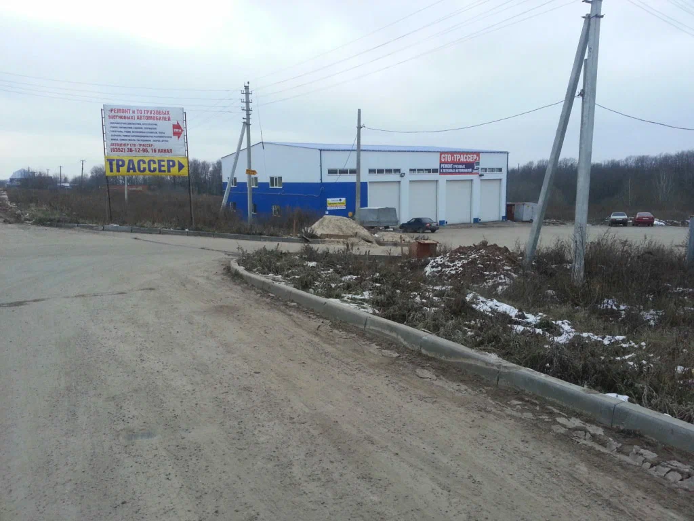
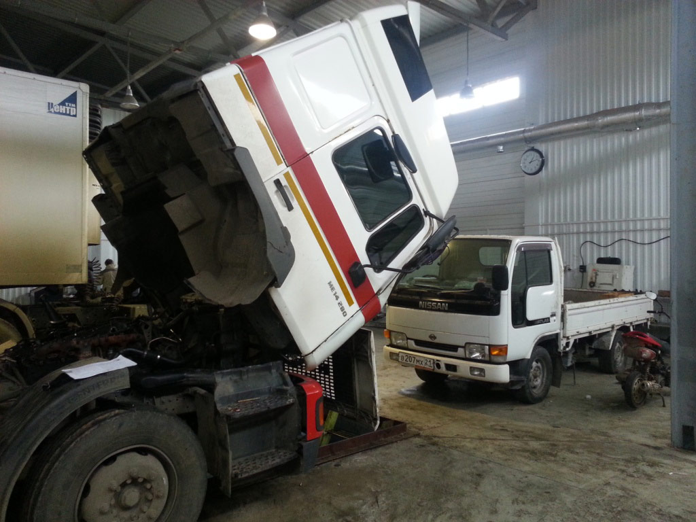
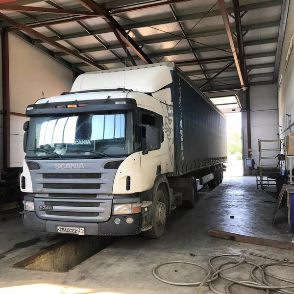
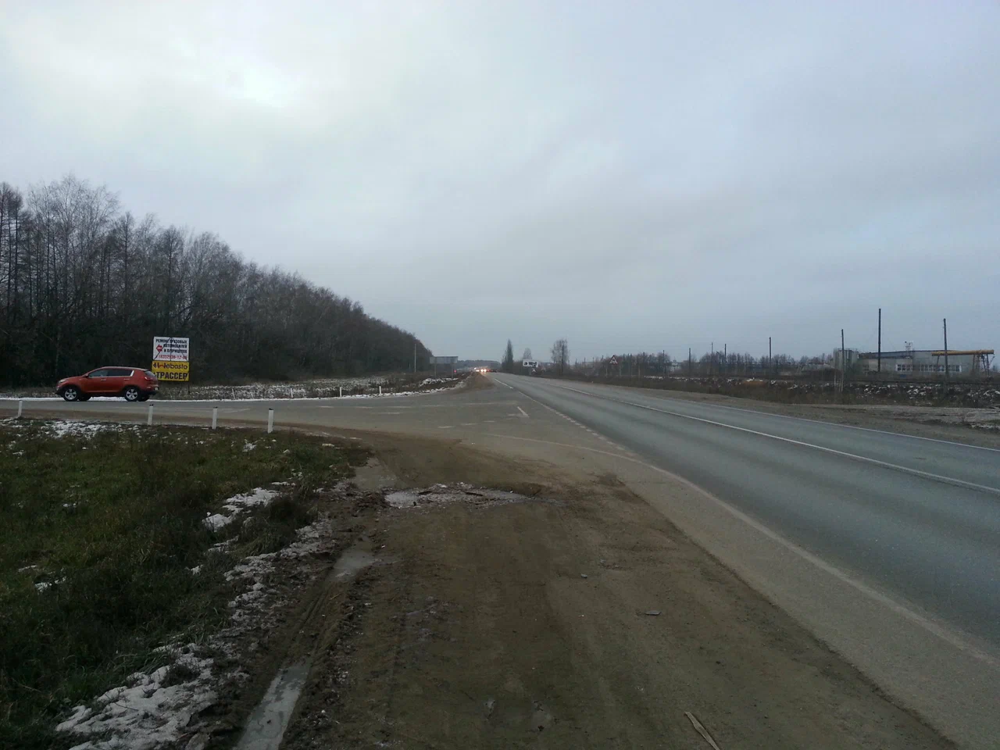
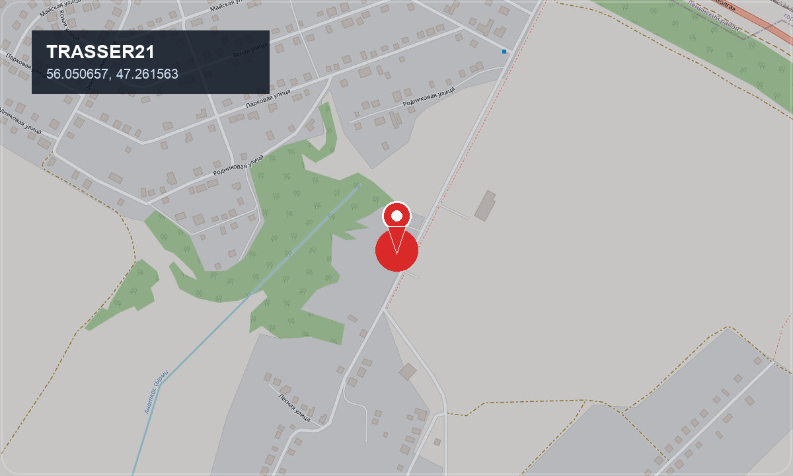

Грузовое СТО
Работы выполняются на базе сервиса: есть боксы, площадка для заезда и понятный адрес.
Грузовое СТО Трассер
СТО Трассер — грузовое СТО по адресу Лесная ул., 13 в д. Хирле-Сир. К нам приезжают на ремонт, диагностику, обслуживание и профильные работы по тахографам.
Если вопрос срочный, лучше сразу звонить: так быстрее, чем оставлять заявку.

О сервисе
СТО Трассер принимает грузовую технику, прицепы, автобусы и коммерческий транспорт на диагностику, обслуживание и ремонт. Перед приездом лучше позвонить: подскажем по загрузке и сориентируем по времени.


Работы выполняются на базе сервиса: есть боксы, площадка для заезда и понятный адрес.
Позвоните заранее, чтобы уточнить проблему, свободное время и порядок заезда.
Работаем с грузовиками, коммерческим транспортом, прицепами и автобусами.
На сайте есть адрес, координаты и быстрый переход в карты для построения маршрута.
Услуги
Выберите нужное направление и сразу переходите к подробностям. Если неисправность срочная или непонятная, лучше позвонить в сервис и описать ситуацию мастеру.
Установка, настройка, обслуживание и консультации по тахографам для коммерческого транспорта.
Открыть страницу услугиПоиск неисправностей, проверка цепей, ремонт проводки и работы с дополнительным оборудованием.
Открыть страницу услугиСлесарные работы, диагностика, обслуживание и восстановление рабочих узлов грузовой техники.
Открыть страницу услугиПлановое обслуживание, проверка состояния техники и поиск причин неисправностей.
Подробнее о ремонте и ТОРемонт и обслуживание магистральных, городских и коммерческих грузовых автомобилей.
Открыть страницу услугиИзготовление карт водителя СКЗИ и ЕСТР для работы с тахографами.
Открыть страницу услугиСтраницы услуг
Для основных услуг собраны отдельные страницы. Так проще быстро найти нужную информацию, понять, подходит ли сервис под вашу задачу, и сразу позвонить.
Информация по установке, настройке, обслуживанию и вопросам, связанным с тахографами.
Перейти на страницуСлесарный ремонт, диагностика, обслуживание и работы по основным узлам грузовой техники.
Перейти на страницуПомощь при ошибках, отказах оборудования, проблемах с проводкой и электрическими цепями.
Перейти на страницуИзготовление карт СКЗИ и ЕСТР. Для оформления потребуются документы: паспорт, СНИЛС и ИНН.
Перейти на страницуПреимущества
После осмотра объясняем, что требуется сделать и какие работы действительно нужны.
Сервис находится по адресу Лесная ул., 13, д. Хирле-Сир. Маршрут можно открыть прямо с сайта.
Основной формат обращения — звонок. Так быстрее уточнить задачу и договориться о заезде.
Как работаем
Мы сделали обращение максимально простым: сначала короткий звонок, затем согласование времени и заезд на сервис.
Вы описываете поломку, тип техники и удобное время визита.
По телефону уточняем симптомы, направление работ и ориентируем, когда удобнее подъехать.
Вы приезжаете на базу по адресу Лесная ул., 13, д. Хирле-Сир. Маршрут можно открыть в картах.
После осмотра мастер определяет объем работ, оценивает стоимость и согласовывает дальнейшие действия.
Сервис в работе
Реальные фотографии помогают сразу понять, как выглядит база, что за техника сюда приезжает и какой у сервиса фактический масштаб.

Живой кадр из ремонтной зоны с техникой в работе и реальной обстановкой сервиса.

Кадр из бокса показывает, как выглядит сервис в реальной рабочей загрузке.

Маршрут и дорожный ориентир для первого визита.
Техника
Принимаем распространённые марки грузовой техники и коммерческого транспорта. По конкретной модели и неисправности лучше уточнить по телефону.
Как доехать
Откройте точку сервиса в удобном приложении и постройте маршрут до базы СТО Трассер.
Адрес: Лесная ул., 13, д. Хирле-Сир
График: Пн–Пт 08:00–17:00
Выходные: Сб–Вс
Координаты: 56.050657, 47.261563

FAQ
Основные работы выполняются на базе СТО по адресу Лесная ул., 13, д. Хирле-Сир. Также возможна выездная диагностика и ремонт электрооборудования.
Лучше позвонить заранее, чтобы уточнить загрузку сервиса и удобное время приема техники.
По телефону удобно обсудить симптомы неисправности, тип техники, желаемое время визита и первичный объем работ.
Да, на странице есть отдельные кнопки для открытия точки в Яндекс Картах, 2GIS и Google Maps.
Куда перейти дальше
Перейдите на страницу тахографов или сразу позвоните, чтобы уточнить нужные работы.
Перейти к услугеДля диагностики, ТО и слесарных работ откройте раздел ремонта грузовиков.
Открыть ремонтЕсли есть ошибки, отказ оборудования или проблемы с проводкой, начните с раздела автоэлектрики. По этому направлению возможен выезд.
Открыть автоэлектрикуКонтакт
Самый быстрый способ обращения сейчас — звонок. По телефону удобнее сразу обсудить поломку, уточнить направление работ и понять, когда лучше подъехать.
Адрес сервиса: Лесная ул., 13, д. Хирле-Сир. Перед выездом лучше коротко позвонить и уточнить загрузку.